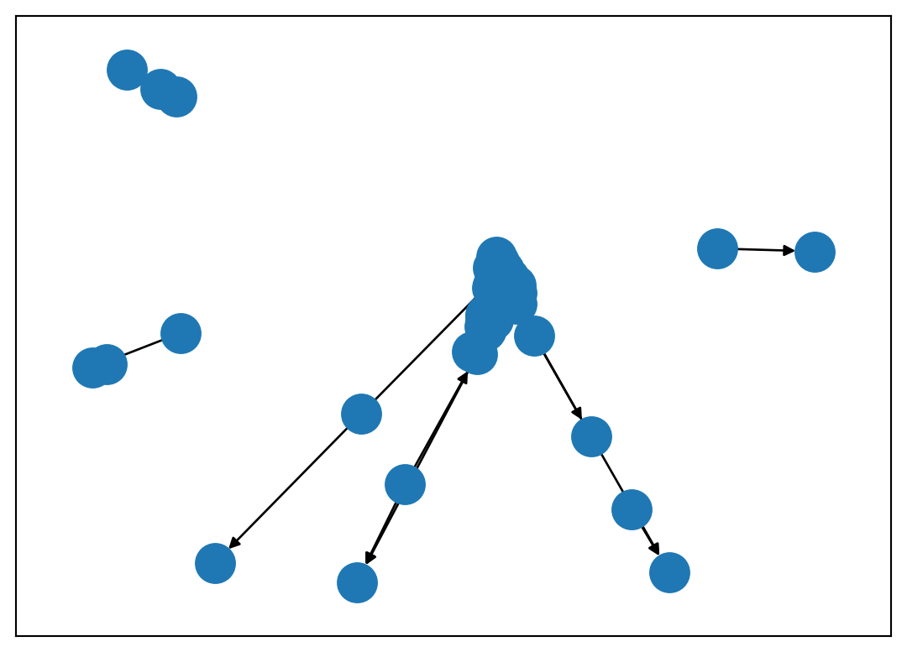

sommets = pd.read_csv("data/som_d13.csv", sep = ";")
liens = pd.read_csv("data/liens_d13.csv", sep = ";")1 Importer ses données
Le jeu de données utilisé tout au long de ce document est l’extrait concernant les Bouches-du-Rhône de la base 2017 des mobilités scolaires intercommunales de l’INSEE.
La table som_d13.csv contient les attributs suivants :
- CODGEO : code INSEE de la commune ;
- P19_POP : population résidente en 2019 (entiers) ;
- SUPERF : superficie (flottants) ;
- SUP_QUALI : superficie inférieure ou supérieure à la moyenne départementale (chaîne de caractères). Des données ont été volontairement supprimés pour voir comment gérer les données manquantes ;
- NOM : nom de la commune ;
- MARS : variable booléenne permettant de savoir si la commune est un arrondissement de Marseille (1) ou non (0).
La table liens_d13.csv contient les attributs suivants :
- Origine : code INSEE de la commune de départ ;
- Arrivee : code INSEE de la commune d’arrivée ;
- weight : flux d’élèves entre communes (flux > 100).
Ces deux fichiers encodés en utf-8 permettent de créer un réseau simple, orienté et valué. Les réseaux autres (bimodaux, multiplexes, avec boucles) ne sont pas évoqués dans ce document.
Pour l’importation et la manipulation des données, soit vous savez utiliser Python et vous n’avez pas besoin de lire les paragraphes qui suivent, soit vous débutez en Python et utiliser le module pandas est recommmandé.
Avant de transformer ces tables en un réseau, il est prudent de contrôler le typage par défaut qu’a choisi pandas lors de l’importation avec la fonction dtypes. Il faut en effet que les codes INSEE soient considérés comme des chaînes de caractères (str) et non comme des entiers (int64), et que la variable MARS soit considérée comme une variable booléenne (bool).
print(sommets.dtypes)
print(liens.dtypes)CODGEO int64
P19_POP int64
SUPERF float64
SUP_QUALI object
NOM object
MARS int64
dtype: object
Origine int64
Arrivee int64
weight int64
dtype: objectLes lignes ci-dessous permettent de typer correctement les données.
# typage des variables
sommets[['CODGEO']] = sommets[['CODGEO']].astype('string')
sommets[['MARS']] = sommets[['MARS']].astype('bool')
liens[['Origine']] = liens[['Origine']].astype('string')
liens[['Arrivee']] = liens[['Arrivee']].astype('string')La syntaxe pour créer un réseau orienté à partir d’une liste de liens est relativement simple. On précise quelle est la colonne des origines, celle des destinations, s’il existe une valuation des liens et si le graphe est orienté.
Pour que le réseau soit considéré comme valué, la colonne des intensités doit s’appeler weight ; il n’y a pas de contrainte particulière concernant les noms de colonnes correspondant aux sommets. Si le réseau est non orienté, on utilise la fonction Graph() et non Digraph().
G = nx.from_pandas_edgelist(liens, # data.frame des liens
source = "Origine", # nom de la colonne origine
target = "Arrivee", # nom de la colonne destination
edge_attr="weight", # attribut poids pour un réseau valué
create_using=nx.DiGraph()) # création d'un réseau orientéLa gestion des attributs des sommets est un tout petit peu plus complexe et la documentation du module n’aide pas vraiment. La solution la plus simple, trouvée en ligne à cette adresse, est d’utiliser la fonction set_index du module pandas. On crée un objet correspondant aux attributs des sommets, on indique quel est l’identifiant (ici CODGEO) et on lui demande de transformer le tableau de données en dictionnaire.
nodes_attr = sommets.set_index('CODGEO').to_dict(orient = 'index')
nx.set_node_attributes(G, nodes_attr)
#contrôle
G.nodes("MARS")NodeDataView({'13001': False, '13041': False, '13201': True, '13205': True, '13208': True, '13209': True, '13213': True, '13002': False, '13206': True, '13211': True, '13212': True, '13003': False, '13053': False, '13103': False, '13004': False, '13078': False, '13097': False, '13005': False, '13028': False, '13042': False, '13119': False, '13210': True, '13007': False, '13014': False, '13117': False, '13015': False, '13016': False, '13086': False, '13018': False, '13089': False, '13019': False, '13020': False, '13046': False, '13022': False, '13023': False, '13024': False, '13050': False, '13025': False, '13026': False, '13043': False, '13054': False, '13056': False, '13030': False, '13031': False, '13032': False, '13033': False, '13035': False, '13036': False, '13100': False, '13037': False, '13038': False, '13039': False, '13047': False, '13077': False, '13040': False, '13044': False, '13045': False, '13083': False, '13108': False, '13063': False, '13048': False, '13074': False, '13049': False, '13051': False, '13052': False, '13102': False, '13104': False, '13059': False, '13060': False, '13062': False, '13064': False, '13065': False, '13066': False, '13027': False, '13068': False, '13069': False, '13070': False, '13071': False, '13072': False, '13087': False, '13073': False, '13075': False, '13076': False, '13067': False, '13079': False, '13080': False, '13081': False, '13082': False, '13084': False, '13085': False, '13088': False, '13091': False, '13092': False, '13094': False, '13095': False, '13098': False, '13101': False, '13105': False, '13106': False, '13107': False, '13109': False, '13110': False, '13111': False, '13112': False, '13113': False, '13114': False, '13118': False, '13202': True, '13203': True, '13204': True, '13214': True, '13215': True, '13207': True, '13216': True}, data='MARS')Plusieurs moyens permettent de contrôler que l’importation s’est bien déroulée :
- afficher l’ordre (nombre de sommets) ;
- afficher la taille (nombre de liens) ;
- contrôler les caractéristiques du réseau ;
- visualiser le réseau obtenu.
print("Ordre : ", nx.number_of_nodes(G), "sommets")
print("Taille : ", nx.number_of_edges(G), "liens")
print("Réseau orienté ?", nx.is_directed(G))
# attribut des liens
print("attribut des liens : ", list(list(G.edges(data=True))[0][-1].keys()))
# attributs des sommets
print("attribut des sommets : ", list(list(G.nodes(data=True))[0][-1].keys()))
# visualisation basique
nx.draw_networkx(G, with_labels=False)Ordre : 114 sommets
Taille : 317 liens
Réseau orienté ? True
attribut des liens : ['weight']
attribut des sommets : ['P19_POP', 'SUPERF', 'SUP_QUALI', 'NOM', 'MARS']